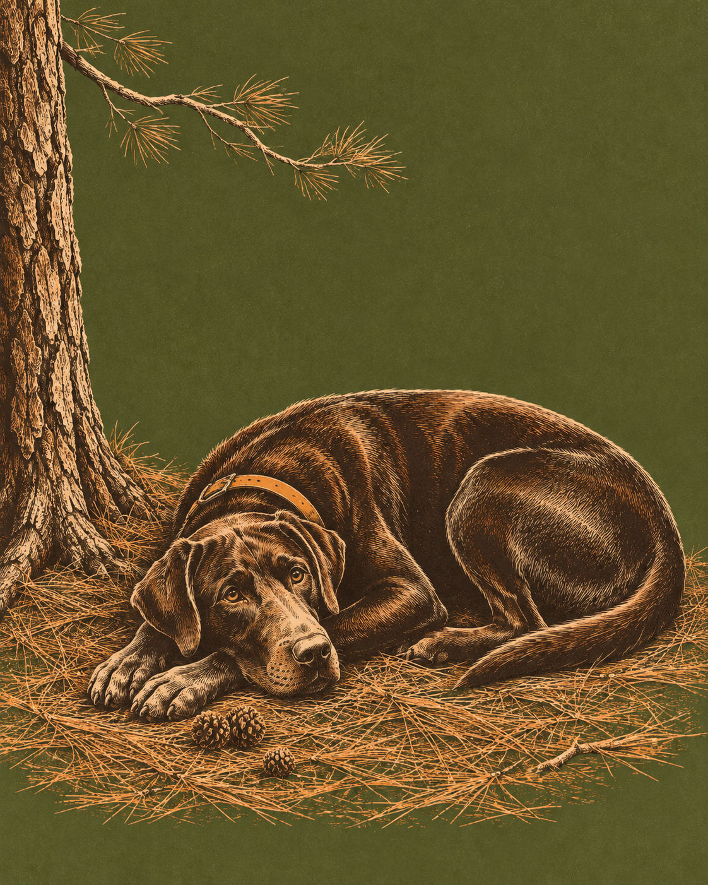

Tuesday's ChoiceFor the weekend of Sat 28 – Sun 29 November
A Little Room by Falls Lake
An easy pine-wood loop at Rolling View, close enough for a modest outing after the holiday.
· Weekend choice 1 of 2

Why This Week
Give the weekend a little breathing room without making it a long expedition. At Rolling View, the TRACK loop—also called Neuse Bend—passes through mixed pine woods along Falls Lake. Follow the short marked loop, let Rupert stop for a few leashed sniffs, and leave time for a packed snack in the picnic area. The official sources put the same loop at roughly six-tenths to three-quarters of a mile. This plan stays inside the day-use area; it does not extend onto the Mountains-to-Sea Trail, the marina or closed Holly Point. The dated forecast is sunny in the low 60s both days. Keep the outing in daylight; the Sunday-night shower chance is after this short walk’s window.
Conditions
Saturday: Sunny, with a high near 62. Sunday: Sunny, with a high near 64. Saturday night: Partly cloudy, with a low around 36. Sunday night: A chance of rain showers after 7pm. Partly cloudy, with a low around 41. Chance of precipitation is 30%.
If it turns
Thunder, heavy rain, unsafe footing, high water, strong wind or official closure: Postpone and recheck the official status and forecast. No exposed outdoor storm alternative.
Forecast snapshot · issued Tue 24 Nov, 06:20 ET · National Weather Service — current point forecast
The Short Loop, Not the MST
Look for the TRACK / Neuse Bend start beside day-use picnic parking. The official trail table lists a 0.75-mile easy loop; the visitor guide says 0.6 mile.
An Open Access, a Separate Closure
Rolling View day use is open year-round. Holly Point construction is elsewhere. Keep Rupert out of the reservoir and off swim beaches.
If Plans Change
- CloserA brief pine-wood pause40 – 1 h 00 drive
- Bigger dayThe complete TRACK circuit0.75 mi · 40 – 1 h 00 drive
- AlternativeA packed snack by the lot40 – 1 h 00 drive
Memory Prompt
Which pine-wood scent or lake-edge view made Rupert slow down?
Sources
- Official access, hours and dog rules retrieved 2026-11-24
- Official trail information retrieved 2026-11-24
- Official park map retrieved 2026-11-24
- Official park news and access notices retrieved 2026-11-24
- National Weather Service — current point forecast snapshot retrieved 2026-11-24 · link shows the current forecast
- Official visitor guide and TRACK route retrieved 2026-11-24
Place details as recorded Tue 24 Nov. They stay as published even if the place's record is corrected later.